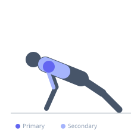

Exercise guide / Wall Handstand Push-Up
Wall Handstand Push-Up
The wall handstand push-up is a vertical pressing calisthenics movement performed inverted with the feet supported against a wall. It loads the anterior and medial deltoids, triceps, and upper trapezius with the full bodyweight through a vertical pressing plane, making it one of the most demanding shoulder exercises achievable with no equipment beyond a wall. The wall provides balance support, allowing focus on pressing strength.
Primary muscles
deltoid anterior
deltoid lateral
Secondary muscles
triceps brachii
trapezius upper
Stabilizers
erector spinae
transverse abdominis
Equipment


Starting position
- Kick up to a handstand against a wall. Hands shoulder-width or slightly wider, fingers spread. Arms fully extended, body in a straight line.
Setup
- Practice the kick-up and handstand hold before attempting pressing reps. Clear the area of obstacles. Use a gym mat for hand comfort.
Steps
- Step 1: Kick up to a handstand with feet resting against the wall.
- Step 2: Lower the head toward the floor by bending the elbows out to the sides.
- Step 3: Touch or nearly touch the top of the head to the floor.
- Step 4: Press back to fully extended arms.
- Step 5: Maintain a tight core throughout — avoid banana-arching.
Coaching cues
- Press the floor away with your hands
- Core tight — no banana back
- Elbows slightly forward, not straight out to the side
Breathing
- Inhale on the descent. Exhale on the press.
Range of motion
- Full arm extension to head lightly touching the floor.
Tempo
- 2-0-2-0
Common mistakes
- Flaring the elbows wide — keep them at ~45 degrees for shoulder safety
- Excessive lumbar arch — maintain a hollow or neutral body position
Safety
- Prerequisites: 20+ standard push-ups, comfortable headstand or partial handstand
- Have a spotter for initial attempts
Training
- strength: 3–8 reps
- strength: 3–5 sets
- Rest: {'strength': 180}